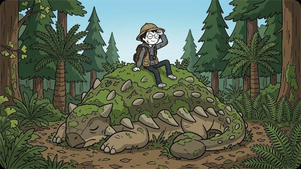
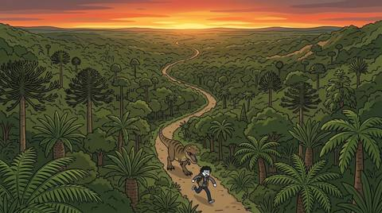
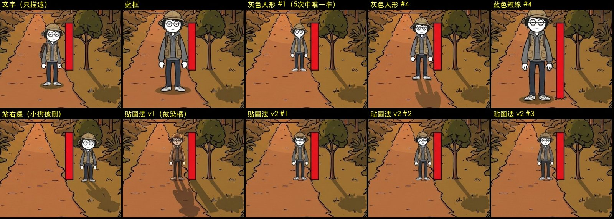
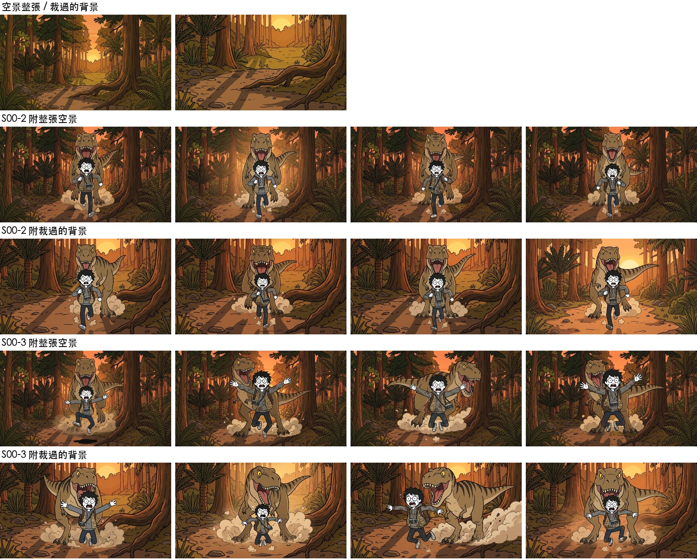
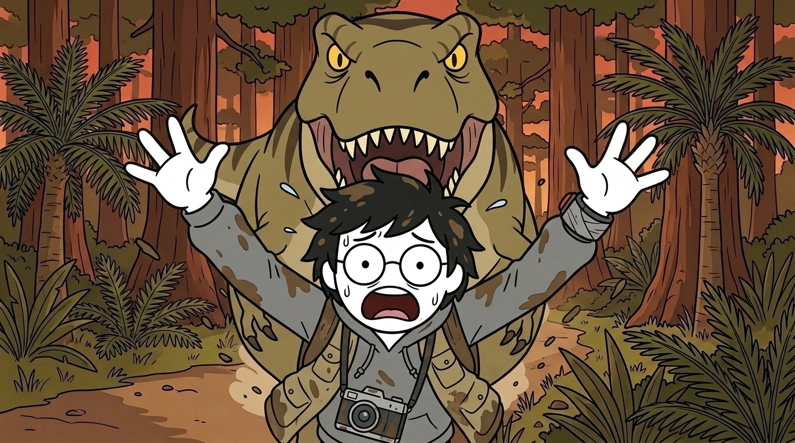

實驗結果
在 Google Flow 上的畫面實驗、測試結果、模型回覆和出圖比較。

降落點空地：空景圖實驗讓甲龍那塊空地每次出現都很像：照地圖畫往北、往西、往南、空拍的空景圖（甲龍看得到的方向分石頭版、空位版），共 7 張各 4 張候選。每張附地圖位置、參考圖、英文 prompt 和中文翻譯。

重複出現的場景同一塊地在不同場、不同集畫出來不一樣。先整理降落點空地（甲龍那塊地）：EP1-new 第 6、17 場和 EP2 共 49 格，每格附的參考圖和目前的圖。

EP1-new 場四重畫（實驗室牆面新寫法）場四 20 格用新寫法重畫：只附鏡頭看得到的牆、prompt 寫「as in the attached images」和檔名、拿掉畫風句和背景文字；每格附 REF_PROPS，博士和 HERO 同框附 PAIR2_PROF。每格 4 張圖、附的參考圖、英文 prompt 和中文翻譯。
剪接台
EP1-new 第 1 場剪接台（音效試做）第 1 場影片加上音效清單的 3 個 must，秒數和音量照模型寫的；下面三條軌道（畫面、旁白、音效）跟著播放走，點一下就跳到那個時間。
音效
EP1 第 1 幕音效候選第 1 幕要用的 10 種聲音（環境、腳步、喘氣、恐龍腳步、吼叫、尖叫、低吼、咬空、定格、倒帶），每種 3 個 Freesound CC0 候選，直接播放試聽、挑一個。
錄音
EP1 錄音旁白對照整份錄音切成 148 格後，每格原本台詞 ↔ Whisper 聽到的台詞並排：音不一樣（可能念錯）標紅、同音字標黃，每格可以直接播放切出來的聲音。
旁白
EP1 旁白順稿對照請模型用連接詞把破碎的旁白接起來、念得通順（資訊不能掉、每格內容留在原格）：每幕每格原本 ↔ 順過之後並排，有改的標底色。
背景
背景測試：第 4 幕同一份 prompt，只把 model 寫的背景換成程式從地圖算的背景：新舊兩張並排，看 Flow 會不會照地圖畫背景。
比例
暴龍比例檢查幕 1 第 2 版兩邊畫出來的圖，每張跟 HERO／TEEN 比例圖並排目視：一致、略大略小、TEEN 該放大或縮小多少。
出圖
分鏡出圖比較同一份 request，Codex 和 Claude 各自分鏡後在 Flow 畫出來的圖並排比較，含旁白分配。
查詢
分鏡回覆查詢每一幕送出的 request、Codex 和 Claude 回來的原始檔、整理版和兩邊比較。
仰視
貼地仰視拆解測試HERO 單人站在森林，每組只改角度那一句：Gemini 寫法、拿掉三種元素、換回舊寫法，各 4 張。
格子
景別 × 角度格子測試景別 8 級 × 角度 5 種 ＝ 40 組，我的 v1 和 Codex 自己寫的版本各 4 張，對照參考表目測。
結果
新鏡頭用語測試結果五組單獨測、我的 v1 和 Codex 改寫版各 4 張的圖、目測判定，和還沒測的清單。
測試
新鏡頭用語測試規劃五組（拍多大、相機高低、左右方向、從哪一邊拍、用誰的眼睛看）的細項、定義、prompt 和參考圖。
Codex
EP1 冷開場：Codex 怎麼拍 vs 我們用標準 prompt 問 Codex 段落 0 要分幾個鏡頭、怎麼拍，跟我們的 4 格對照。

S00-3 景別 × 相機角度10 級景別 × 4 種角度共 160 張，加上對照官方定義的評估。

HERO 放進畫面的實驗白地、小樹、紅柱、加 TEEN、森林貼圖法、十字路口橫移，每次的圖和 prompt。

背景實驗紀錄黃昏森林背景的五種效果，每個試過的做法和結果。

第一幕追逐：十一種表現法S00-1 → S00-3 暴龍從遠處追到鏡頭前，十一種畫法對照。